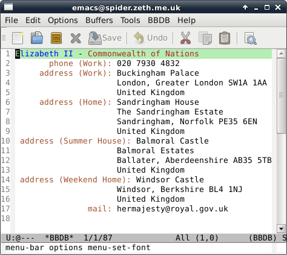

Managing Contacts in Emacs with BBDB
This post is about BBDB (Big Brother Database), which is the main contacts application available for Emacs.
Contacts Application for Emacs
BBDB is packaged within distributions, albeit quite old versions of it are packaged within Debian at the time of writing.
Information about BBDB can be found at its Savannah homepage, and most importantly downloads are found here. I wanted the latest version so I downloaded it from there.
The latest versions (that begin with 3, e.g. 3.1.2) require Emacs 23 or 24, an older version of Emacs will require version 2 of BBDB; although it is much nicer for other reasons to use the latest version of Emacs that you can get.
The README gives full instructions to get set up. Basically, like with most other Emacs libraries, you make the library available by editing the ~/.emacs file and using the require function.
(require 'bbdb-loaddefs "/path/to/bbdb/lisp/bbdb-loaddefs.el")
Storage Format
Despite the name ending in DB, contacts are stored in a plain text file at ~/emacs.d/bbdb (where ~ represents the user’s home directory).
It is worth knowing that each line in the file is a contact, which takes the form of a vector, this is a LISP data type similar to a JavaScript Array or Python list (but items are delimited with spaces rather than commas).
If you ever edit the file by hand or with code you write yourself, it is important to keep one item to a line, if a line break gets removed then BBDB will reject the file until you fix it.
Since it is a plain text file, you can do back it up easily, sync it between computers, write scripts that do things to it, track it with git or whatever you can imagine.
Importing Contacts
If you already have a load of contacts somewhere, then the best way to get started is to import them from there. I personally had a load of contacts in Google Contacts that had been built up from my Gmail account and Android phone.
I used a lovely little Python script called charrington which grabbed all the contacts from Google and added them to a bbdb file.
Using BBDB
As always, M is for Meta which means Alt on an IBM-PC style keyboard.
Typing M-x bbdb allows you to search for a contact. So if I search for Elizabeth, I get this contact:
The other commands all start with bbdb- for example, M-x bbdb-create allows you to type in a new record. There is almost a hundred commands, but you do not need to remember them. Using tab completion shows them all, they are also organised in a toolbar menu.
If you have imported lots of contacts from Google Contacts, then sometimes different pieces of information about a person are stored under different names.
One of the most useful things is M-x bbdb-search-duplicates, this allows you to merge contacts together and/or delete duplicate contacts.
Sending Mail
When you have point over a record, pressing m will allow you to compose an email to the person. Emacs then drops you into message mode.
Email in Emacs is another topic entirely, but if you put the following into your ~/.emacs file then you have setup the absolute basics:
(setq user-mail-address "youremail@example.com"
user-full-name "Your Name")
If you have a mail transport agent or relay (such as mstmp) setup then Emacs can pass the email to whatever is pointed to by /usr/sbin/sendmail or you can use Emacs itself to relay email.
Other features
Pressing simply e edits the current line. ; allows you to write an attached note. If the record has a www field then W displays the web page.
You can even phone your contacts directly from Emacs! Typing M-d will phone the current contact; obviously you need to have a modem or some other kind of phone system setup.
Various mail and news packages for Emacs can make use of your contacts to provide auto-fill functions, e.g. in the To: field of an email.
Image credit: Phone Call 8 by johnberd first contact by momo5